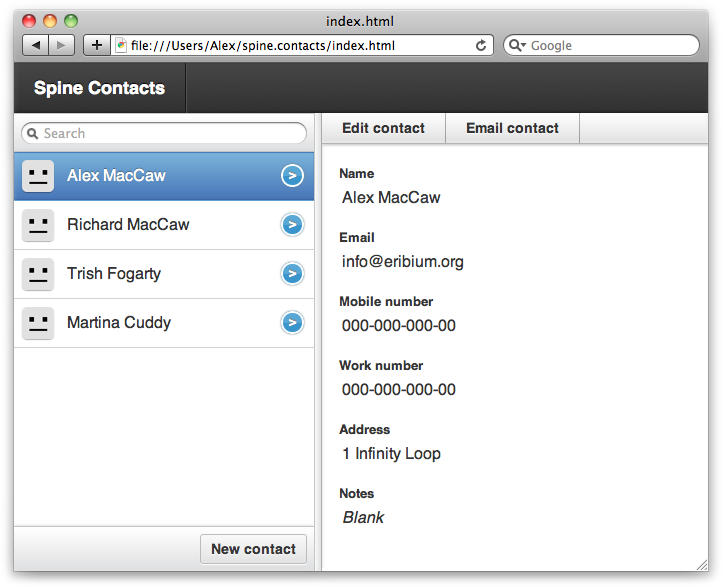
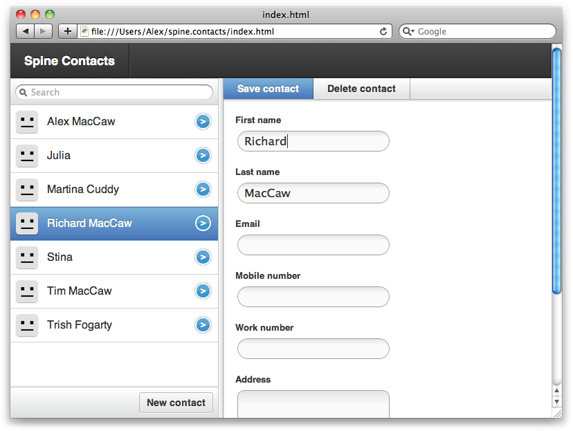

{% include JB/setup %}
{% raw %}
<div>
<div class="book" title="Building a Contacts Manager"><div class="book"><div class="book"><div class="book"><h1 class="title1"><a id="contents_manage" class="calibre1"></a>Building a Contacts Manager</h1></div></div></div><p class="calibre3"><a id="index-061G234MM1V" class="calibre1"></a><a id="index-025L504JW6O" class="calibre1"></a>So, let’s take our knowledge of Spine’s API and apply it to
    something practical, like a contacts manager. We want to give users a way
    of reading, creating, updating, and deleting contacts, as well as
    searching them.</p><p class="calibre3"><a class="ulink" href="ch11s06.html#fig_11_1" title="Figure 11-1. Listing contacts in a Spine application">Figure 11-1</a> shows the finished result so you can
    have an idea of what we’re creating.</p><div class="figure"><a id="fig_11_1" class="calibre1"></a><div class="book"><div class="book"><a id="I_mediaobject11_d1e11417" class="calibre1"></a></div></div><p class="title4">Figure 11-1. Listing contacts in a Spine application</p></div><p class="calibre3">The contact manager is one of a set of open source Spine examples.
    You can follow along with the tutorial below, or download the full code
    from the <a class="ulink" href="http://github.com/maccman/spine.contacts">project’s
    repository</a>.</p><p class="calibre3">As you can see in <a class="ulink" href="ch11s06.html#fig_11_1" title="Figure 11-1. Listing contacts in a Spine application">Figure 11-1</a>, the contact manager
    has two main sections, the sidebar and the contacts view. These two will
    make up our respective controllers, <code class="literal">Sidebar</code> and <code class="literal">Contacts</code>. As for models, the manager only has
    one: the <code class="literal">Contact</code> model. Before we
    expand on each individual component, let’s take a look at the initial page
    structure:</p><pre class="screen">&lt;div id="sidebar"&gt;
  &lt;ul class="items"&gt;
  &lt;/ul&gt;

  &lt;footer&gt;
    &lt;button&gt;New contact&lt;/button&gt;
  &lt;/footer&gt;
&lt;/div&gt;

&lt;div class="vdivide"&gt;&lt;/div&gt;

&lt;div id="contacts"&gt;
  &lt;div class="show"&gt;
    &lt;ul class="options"&gt;
      &lt;li class="optEdit"&gt;Edit contact&lt;/li&gt;
      &lt;li class="optEmail"&gt;Email contact&lt;/li&gt;
    &lt;/ul&gt;
    &lt;div class="content"&gt;&lt;/div&gt;
  &lt;/div&gt;

  &lt;div class="edit"&gt;
    &lt;ul class="options"&gt;
      &lt;li class="optSave default"&gt;Save contact&lt;/li&gt;
      &lt;li class="optDestroy"&gt;Delete contact&lt;/li&gt;
    &lt;/ul&gt;
    &lt;div class="content"&gt;&lt;/div&gt;
  &lt;/div&gt;
&lt;/div&gt;</pre><p class="calibre3">We have a <code class="literal">#sidebar</code> div and a
    <code class="literal">#contacts</code> div for our respective
    sections. Our application is going to fill the <code class="literal">.items</code> list with contact names and have a
    currently selected contact showing in <code class="literal">#contacts</code>. We’ll listen to clicks on <code class="literal">.optEmail</code> and <code class="literal">.optSave</code>, toggling <span class="calibre1">between</span> the show and edit states as
    required. Finally, we’ll listen for <em class="calibre4">click</em> events on
    <code class="literal">.optDestroy</code>, which destroys the current
    contact and selects another.</p><div class="book" title="Contact Model"><div class="book"><div class="book"><div class="book"><h2 class="title3"><a id="id2937087" class="calibre12"></a>Contact Model</h2></div></div></div><p class="calibre3"><a id="I_indexterm11_d1e11476" class="calibre1"></a><a id="I_indexterm11_d1e11483" class="calibre1"></a><a id="I_indexterm11_d1e11488" class="calibre1"></a>With just a half-dozen lines of code, the contact model is
      exceedingly straightforward. <code class="literal">Contact</code>
      has three attributes: <code class="literal">first_name</code>,
      <code class="literal">last_name</code>, and <code class="literal">email</code>. We’ll also provide a helper function
      that will give a full name, which will be useful in templates:</p><pre class="screen">// Create the model
var Contact = Spine.Model.setup("Contact", ["first_name", "last_name", "email"]);

// Persist model between page reloads
Contact.extend(Spine.Model.Local);

// Add some instance functions
Contact.include({
  fullName: function(){
    if ( !this.first_name &amp;&amp; !this.last_name ) return;
    return(this.first_name + " " + this.last_name);
  }
});</pre><p class="calibre3">Notice that <code class="literal">Spine.Model.Local</code>
      is extending the model. This will ensure that records are saved to the
      browser’s local storage, making them available the next time the page
      loads.</p></div><div class="book" title="Sidebar Controller"><div class="book"><div class="book"><div class="book"><h2 class="title3"><a id="id2937181" class="calibre12"></a>Sidebar Controller</h2></div></div></div><p class="calibre3"><a id="I_indexterm11_d1e11517" class="calibre1"></a><a id="I_indexterm11_d1e11524" class="calibre1"></a><a id="I_indexterm11_d1e11529" class="calibre1"></a>Now let’s take a look at the <code class="literal">Sidebar</code> controller, which has the
      responsibility of listing contacts and keeping track of the currently
      selected one. Whenever contacts change, the <code class="literal">Sidebar</code> controller must update itself to
      reflect those changes. In addition, the sidebar has a “New contact”
      button that it will listen to, creating new blank contacts when it’s
      clicked.</p><p class="calibre3">Here’s the full controller in all its glory. This might be an
      overwhelming piece of code at first—especially if you’re not familiar
      with Spine—but it’s heavily commented, so it should be understandable
      under closer examination:</p><pre class="screen">jQuery(function($){

  window.Sidebar = Spine.Controller.create({
    // Create instance variables:
    //  this.items //=&gt; &lt;ul&gt;&lt;/ul&gt;
    elements: {
      ".items": "items"
    },

    // Attach event delegation
    events: {
      "click button": "create"
    },

    // Ensure these functions are called with the current
    // scope as they're used in event callbacks
    proxied: ["render"],

    // Render template
    template: function(items){
      return($("#contactsTemplate").tmpl(items));
    },

    init: function(){
      this.list = Spine.List.init({
        el: this.items,
        template: this.template
      });

      // When the list's current item changes, show the contact
      this.list.bind("change", this.proxy(function(item){
        this.App.trigger("show:contact", item);
      }));

      // When the current contact changes, i.e., when a new contact is created,
      // change the list's currently selected item
      this.App.bind("show:contact edit:contact", this.list.change);

      // Rerender whenever contacts are populated or changed
      Contact.bind("refresh change", this.render);
    },

    render: function(){
      var items = Contact.all();
      this.list.render(items);
    },

    // Called when 'Create' button is clicked
    create: function(){
      var item = Contact.create();
      this.App.trigger("edit:contact", item);
    }
  });

});</pre><p class="calibre3">You’ll notice that the controller’s <code class="literal">init()</code> function is using a class called
      <code class="literal">Spine.List</code><a id="I_indexterm11_d1e11550" class="calibre1"></a><a id="I_indexterm11_d1e11553" class="calibre1"></a>, something we haven’t yet covered. <code class="literal">Spine.List</code> is a utility controller that’s
      great for generating lists of records. What’s more, <code class="literal">Spine.List</code> will keep track of a currently
      selected item, and then notify listeners with a
      <span class="calibre1"><em class="calibre4">change</em></span> event <a id="I_indexterm11_d1e11569" class="calibre1"></a><a id="I_indexterm11_d1e11572" class="calibre1"></a>when the user selects a different item.</p><p class="calibre3">The list is completely rerendered whenever contacts are changed or
      refreshed. This keeps the example nice and simple, but it may be
      something we want to change in the future if performance issues
      arise.</p><p class="calibre3">The <code class="literal">#contactsTemplate</code>
      referenced in <code class="literal">template()</code> is a script
      element that contains our contact’s template for individual list
      items:</p><pre class="screen">&lt;script type="text/x-jquery-tmpl" id="contactsTemplate"&gt;
  &lt;li class="item"&gt;
    {{if fullName()}}
      &lt;span&gt;${fullName()}&lt;/span&gt;
    {{else}}
      &lt;span&gt;No Name&lt;/span&gt;
    {{/if}}
  &lt;/li&gt;
&lt;/script&gt;</pre><p class="calibre3">We are using <a class="ulink" href="http://api.jquery.com/jquery.tmpl">jQuery.tmpl</a> for the
      templating, which should be familiar to you if you’ve read <a class="ulink" href="ch05.html" title="Chapter 5. Views and Templating">Chapter 5</a>. <code class="literal">Spine.List</code> will use this template to render
      each item, and it will set a class of <code class="literal">current</code> on the <code class="literal">&lt;li&gt;</code> if it’s associated with the
      currently selected item.</p></div><div class="book" title="Contacts Controller"><div class="book"><div class="book"><div class="book"><h2 class="title3"><a id="id2937451" class="calibre12"></a>Contacts Controller</h2></div></div></div><p class="calibre3"><a id="I_indexterm11_d1e11610" class="calibre1"></a><a id="I_indexterm11_d1e11617" class="calibre1"></a><a id="I_indexterm11_d1e11622" class="calibre1"></a>Our <code class="literal">Sidebar</code> controller
      is now displaying a list of contacts, allowing users to select
      individual ones. But how about showing the currently selected contact?
      This is where the <code class="literal">Contacts</code> controller
      comes in:</p><pre class="screen">jQuery(function($){

  window.Contacts = Spine.Controller.create({
    // Populate internal element properties
    elements: {
      ".show": "showEl",
      ".show .content": "showContent",
      ".edit": "editEl"
    },

    proxied: ["render", "show"],

    init: function(){
      // Initial view shows contact
      this.show();

      // Rerender the view when the contact is changed
      Contact.bind("change", this.render);

      // Bind to global events
      this.App.bind("show:contact", this.show);
    },

    change: function(item){
      this.current = item;
      this.render();
    },

    render: function(){
      this.showContent.html($("#contactTemplate").tmpl(this.current));
    },

    show: function(item){
      if (item &amp;&amp; item.model) this.change(item);

      this.showEl.show();
      this.editEl.hide();
    }        
  });</pre><p class="calibre3">Whenever a new contact is selected in the sidebar, the global
      <span class="calibre1"><em class="calibre4">show:contact</em></span> event <a id="I_indexterm11_d1e11641" class="calibre1"></a><a id="I_indexterm11_d1e11644" class="calibre1"></a>will be triggered. We’re binding to this event in <code class="literal">Contacts</code>, executing the <code class="literal">show()</code> function, which gets passed the newly
      selected contact. We’re then rerendering the <code class="literal">showContent</code> div, replacing it with the
      currently selected record.</p><p class="calibre3">You can see we’ve referenced a <code class="literal">#contactTemplate</code> template, which will display
      <code class="literal">Contacts</code>' current contact to our
      users. Let’s go ahead and add that template to the page:</p><pre class="screen">&lt;script type="text/x-jquery-tmpl" id="contactTemplate"&gt;
  &lt;label&gt;
    &lt;span&gt;Name&lt;/span&gt;
    ${first_name} ${last_name}
  &lt;/label&gt;

  &lt;label&gt;
    &lt;span&gt;Email&lt;/span&gt;
    {{if email}}
      ${email}
    {{else}}
      &lt;div class="empty"&gt;Blank&lt;/div&gt;
    {{/if}}
  &lt;/label&gt;
&lt;/script&gt;</pre><p class="calibre3">We’ve now got functionality to show contacts, but how about
      editing and destroying <span class="calibre1">them? Let’s rewrite the <code class="literal">Contacts</code> controller to do that. The main
      difference is that we’re </span><span class="calibre1">going to
      toggle between two application states, showing and editing when the
      <code class="literal">.opt</code></span><span class="calibre1"><code class="literal">Edit</code> and
      <code class="literal">.optSave</code> elements are clicked. We’re
      also going to add a new template into</span> the fray: <code class="literal">#editContactTemplate</code>. When saving records,
      we’ll read the edit form’s inputs and update the record’s
      attributes:</p><pre class="screen">jQuery(function($){

  window.Contacts = Spine.Controller.create({
    // Populate internal element properties
    elements: {
      ".show": "showEl",
      ".edit": "editEl",
      ".show .content": "showContent",
      ".edit .content": "editContent"
    },

    // Delegate events
    events: {
      "click .optEdit": "edit",
      "click .optDestroy": "destroy",
      "click .optSave": "save"
    },

    proxied: ["render", "show", "edit"],

    init: function(){
      this.show();
      Contact.bind("change", this.render);
      this.App.bind("show:contact", this.show);
      this.App.bind("edit:contact", this.edit);
    },

    change: function(item){
      this.current = item;
      this.render();
    },

    render: function(){
      this.showContent.html($("#contactTemplate").tmpl(this.current));
      this.editContent.html($("#editContactTemplate").tmpl(this.current));
    },

    show: function(item){
      if (item &amp;&amp; item.model) this.change(item);

      this.showEl.show();
      this.editEl.hide();
    },

    // Called when the 'edit' button is clicked
    edit: function(item){
      if (item &amp;&amp; item.model) this.change(item);

      this.showEl.hide();
      this.editEl.show();
    },

    // Called when the 'delete' button is clicked
    destroy: function(){
      this.current.destroy();
    },

    // Called when the 'save' button is clicked
    save: function(){
      var atts = this.editEl.serializeForm();
      this.current.updateAttributes(atts);
      this.show();
    }
  });

});</pre><p class="calibre3">As mentioned previously, we’re using a new template called
      <code class="literal">#editContactTemplate</code>. <span class="calibre1">We need</span> to add this to the page so it can
      be referenced successfully. Essentially, <code class="literal">#editContactTemplate</code> is very similar to
      <code class="literal">#contactTemplate</code>, except that it’s
      using input elements to display the record’s data:</p><pre class="screen">&lt;script type="text/x-jquery-tmpl" id="editContactTemplate"&gt;
  &lt;label&gt;
    &lt;span&gt;First name&lt;/span&gt;
    &lt;input type="text" name="first_name" value="${first_name}" autofocus&gt;
  &lt;/label&gt;

  &lt;label&gt;
    &lt;span&gt;Last name&lt;/span&gt;
    &lt;input type="text" name="last_name" value="${last_name}"&gt;
  &lt;/label&gt;

  &lt;label&gt;
    &lt;span&gt;Email&lt;/span&gt;
    &lt;input type="text" name="email" value="${email}"&gt;
  &lt;/label&gt;
&lt;/script&gt;</pre></div><div class="book" title="App Controller"><div class="book"><div class="book"><div class="book"><h2 class="title3"><a id="id2937755" class="calibre12"></a>App Controller</h2></div></div></div><p class="calibre3"><a id="I_indexterm11_d1e11714" class="calibre1"></a><a id="I_indexterm11_d1e11721" class="calibre1"></a><a id="I_indexterm11_d1e11726" class="calibre1"></a>So, we’ve got two controllers—<code class="literal">Sidebar</code> and <code class="literal">Contacts</code>—that deal with selecting, displaying,
      and editing <code class="literal">Contact</code> records. Now all
      that’s needed is an <code class="literal">App</code> controller
      that instantiates every other controller, passing them the page elements
      they require:</p><pre class="screen">jQuery(function($){
  window.App = Spine.Controller.create({
    el: $("body"),

    elements: {
      "#sidebar": "sidebarEl",
      "#contacts": "contactsEl"
    },

    init: function(){
      this.sidebar = Sidebar.init({el: this.sidebarEl});
      this.contact = Contacts.init({el: this.contactsEl});

      // Fetch contacts from local storage
      Contact.fetch();
    }
  }).init();
});</pre><p class="calibre3">Notice we’re calling <code class="literal">.init()</code>
      immediately after creating the <code class="literal">App</code>
      controller. We’re also calling <code class="literal">fetch()</code> on the <code class="literal">Contact</code> model, retrieving all the contacts
      from local storage.</p><p class="calibre3">So, that’s all there is to it! Two main controllers (<code class="literal">Sidebar</code> and <code class="literal">Contacts</code>), one model (<code class="literal">Contact</code>), and a couple of views. To see the
      finished product, check out the <a class="ulink" href="http://github.com/maccman/spine.contacts">source repository</a>
      and see <a class="ulink" href="ch11s06.html#fig_11_2" title="Figure 11-2. Editing contacts in the example Spine application">Figure 11-2</a>.<a id="I_indexterm11_d1e11777" class="calibre1"></a><a id="I_indexterm11_d1e11778" class="calibre1"></a><a id="I_indexterm11_d1e11779" class="calibre1"></a><a id="I_indexterm11_d1e11780" class="calibre1"></a></p><div class="figure"><a id="fig_11_2" class="calibre1"></a><div class="book"><div class="book"><a id="I_mediaobject11_d1e11784" class="calibre1"></a></div></div><p class="title4">Figure 11-2. Editing contacts in the example Spine application</p></div></div></div></div>

{% endraw %}

